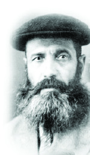

Reb Yisroel Neveler: A Lion Among Men
R’ Yisroel Levin of Nevel, known as Reb Yisroel Neveler, embodied a rare combination of traits. He was a lamdan in Nigleh as well as a maskil in Chassidus. He was also an oved who spent a long time on his davening. * He was a truly effective melamed whom persecution, interrogations and imprisonment could not deter from starting a secret yeshiva in every town he went to. * People felt his love for them, even when he gave them a tongue-lashing. * His life’s story was written up in the t’shura for the Melamed-Barber wedding.
PART 1: HIS EARLY YEARS THROUGH HIS ARREST AND RELEASE

However, Nevel became part of the Chassidic lexicon ever since its founding in the times of the Alter Rebbe. When they arrested the Alter Rebbe and brought him to Petersburg, he did not want to travel Friday afternoon. He asked them to stop traveling and to stay in a nearby village or town, because one should not travel on Friday afternoons. His guards refused, and then one problem after another ensued. One of the horses died, the axle broke, etc. When the guards saw they could not continue, they camped on the side of the road and spent Shabbos under a tree. This was near Nevel. The elders of Nevel would point to the tree next to which the Alter Rebbe spent that Shabbos.
Nevel had twenty shuls and battei midrash and they were all Chassidic. The Chassidim of Nevel were known to be mekusharim to the Chabad Rebbeim throughout the generations. Great Chassidim were born there or lived there for many years, including R’ Gershon Dov of Pahar and R’ Peretz Chein, the father of that illustrious chain of Chassidim. These two Chassidim merited being with the Mitteler Rebbe and then the Tzemach Tzedek. In the generations that followed there were many great Chassidim from Nevel such as R’ Yehoshua Lein, R’ Michoel Bliner der Alter, and the mashpia R’ Zalman Moshe Yitzchaki.
The Mitteler Rebbe once said: Halleluhu b’neivel (lit. sing His praises with a harp) – Halleluhu B’Nevel. The Rebbe Rayatz said, “A butcher from Nevel is better and dearer to me than a maskil from Kremenchug.”
AS A YOUNG TAMIM IN LUBAVITCH
In this Chassidishe town, where every corner was saturated with Chassidus and an atmosphere of k’dusha and tahara, R’ Dovid Abba’le Levin and his wife Chana Elka had a son whom they named Yisroel.
In accordance with the Chassidishe chinuch that he absorbed at home, Yisroel yearned to go to the Rebbe. When he became bar mitzva and heard that the Rebbe had founded a yeshiva in Lubavitch, he wanted to leave for Tomchei T’mimim immediately. His parents were afraid to send him away from home at such a young age, but he insisted on going. A short while later he arrived in Lubavitch, he was among the youngest in the yeshiva.
He learned in Lubavitch for ten years, where he toiled in learning day and night. When he learned Nigleh, he wanted to know the reasoning of each Sage, that of the Tanaim and the Amoraim – understanding the reasoning behind each topic, question or answer – as well as that of Rashi, Tosafos and the commentaries, what they sought to explain, what their questions were and how they answered them. R’ Avrohom Eliyahu Plotkin, who learned b’chavrusa with R’ Yisroel, related that one time the Rebbe Rashab told them to “work through” the topic of Agunos. They learned (if I recall correctly what he told me) six daf from the tractate Yevamos for half a year until they had fulfilled the instruction to “work through” the subject.
When he learned Chassidus he also sought always to delve into the root of each idea in order to get things clear. He studied the deepest haskala in Chassidus and clarified it until it was a beautiful pearl. In all this, he did not suffice with knowledge and understanding. He internalized what he learned with the proper contemplation and then would daven at length, infused with the inyanim he had studied.
He was also extremely sharp. He was tremendously diligent on the one hand and davened with avoda; on the other hand, he possessed a razor sharpness that bordered on mischievousness.
They say that when he was learning in Lubavitch, he was fined for something he did and was not allowed to enter the yeshiva dining room for two weeks. There were boys from wealthy homes that had money on them and could buy food for themselves whenever they liked, but Yisroel Levin wasn’t one of them. At that time, those talmidim who needed a better menu or were especially particular would eat at the yeshiva’s expense in people’s homes. Their hosts would submit a bill once a month. Yisroel went to one of these balabatim and said: I was sent by the yeshiva to eat with you for two weeks.
The man did not ask for a confirmation in writing because a Tamim was reliable. Two weeks later, Yisroel went back to his usual routine and at the end of the month the host submitted a bill to R’ Eliezer Kaplan (Lazer der Kantorchik) the financial administrator of the yeshiva. R’ Kaplan paid him but reported to the Rebbe’s son (later to be the Rebbe Rayatz) who was the dean. Rayatz asked Yisroel who gave him permission to do that. Yisroel said, “I figured that if I did not eat for two weeks I would die, and then the cost of shrouds, the funeral and the burial would be even greater…” Rayatz smiled and dismissed him.
A CHASSIDISHE MELAMED
During the years of the early twentieth century, R’ Mordechai Pevsner arrived in Lubavitch from Klimovitz. He was a descendent of R’ Mordechai Pevsner, the brother of the Alter Rebbe. He had come to ask the Rebbe Rashab for a shidduch suggestion for his daughter Chana Michla. The Rebbe said: We have the son of Dovid Abba’le of Nevel. I think it would be a good shidduch. And it was.
Before that, R’ Yisroel began learning Yoreh Deia as the Rebbe told him to and received smicha for rabbanus as well as kabbala for sh’chita and ordination as a mohel.
After he married he moved to Klimovitz to be near his in-laws. There he continued learning. R’ Shmuel Gurary lived in Klimovitz, and on one of his trips to Lubavitch he asked the Rebbe about a melamed for his sons. The Rebbe said: You should take Yisroel Neveler as a melamed, for then they will know what a Chassidishe melamed is.
So R’ Yisroel became the melamed for R’ Shmuel’s sons. When R’ Shmuel moved from Klimovitz he took the melamed along. R’ Yisroel’s wife remained in her parents’ home and R’ Yisroel would return once every few months. This went on for several years.
In the meantime, he had three children and when R’ Shmuel moved to Kremenchug in the Ukraine, R’ Yisroel and his entire family joined him. Among R’ Yisroel’s talmidim at that time was also Shmaryahu, the son of R’ Menachem Mendel Gurary, whom the Rebbe Rayatz later took as a son-in-law.
R’ Yisroel’s manner of teaching became famous, i.e. the way he related to every question a student asked and his patience. Many people wanted to send their children to him. He was a very effective melamed. Every piece of Gemara, every topic he taught, every answer he gave, was fully explained with parables and examples until every student understood it.
In one shiur, one of the boys wanted to look in the Gemara belonging to one of the sons of R’ Tzvi Gurary, who refused to let him. R’ Yisroel noticed this and went over to the child and said, “Read the Mishna and explain it.” The boy began reading, “Me’eimasi – from when,” but R’ Yisroel slapped him and said, “That is incorrect. Me’eimasai means that when your friend asks to look into your Gemara, you let him. Nu, continue.”
The boy continued reading, “Kor’im – do we read.” R’ Yisroel slapped him again and said, “Kor’im also means that when your friend asks you … And you should know that this is the meaning of every word in the Mishna. Furthermore, this is true even before you get to Me’eimasai. If you don’t have love for your fellow, you cannot begin to learn the Mishna.”
IN ROSTOV, NEAR THE REBBE RASHAB
R’ Yisroel lived in Kremenchug for four years, from 5673/1913 till 5678/1918. These years were fateful ones for the Russian government and the state of religion and Judaism throughout the country. World War I began in 5674/1914 and when the Germans approached Russia, the Rebbe Rashab was extremely nervous about this and spoke against it very sharply. In his letter dated 14 Elul 5675, the Rebbe referred to the cursed Germans and wished that G-d would be with the Russians so they would subdue the Germans, expel them, and rid the land of them.
At the beginning of Cheshvan 5676, when the front moved ever closer, the Rebbe and his household left Lubavitch for Rostov on the Don and then various divisions of the yeshiva were moved from Lubavitch to Kremenchug. The Russian Revolution began. In 1917 the Czar was assassinated and civil war erupted. In 1918 the communist party was ensconced in the government and religious persecution followed.
At the end of 1918, R’ Yisroel and his family left Kremenchug for Rostov to be near the Rebbe. Although matters worsened from day to day and religious functionaries were persecuted and arrested, R’ Yisroel continued his holy work of teaching Torah to children even in Rostov while ignoring the danger.
They say that at a certain point, R’ Yisroel Neveler had to work very hard to provide for his family and would get up early in the morning and work all day serving guests. When he got home at night he was exhausted. He did not have time to learn Chassidus. When he went to the Rebbe and complained about having to work so hard and not being able to learn Chassidus, the Rebbe said: When you get home, despite your exhaustion, sit down and start learning. Yes, it’s hard, but do it anyway. The first half an hour will be very hard for you and maybe the first hour, but after that it will go easily.
YISROEL, WHO ARE YOU LEAVING ME WITH?
R’ Yisroel’s home in Rostov turned into a mosad in and of itself. Whoever came to spend Tishrei or other special times with the Rebbe, or came just for a weekday, knew that whether he showed up by day or by night, he could always go to the home of R’ Yisroel Neveler who would graciously welcome him. The family members would take care of their meals and lodging. If a guest came when R’ Yisroel was at home, his host would sit down with him and inquire into his situation and his family’s situation, parnasa, health etc. just as though he was an actual brother.
After Purim 1920, when the Rebbe’s health deteriorated, R’ Yisroel spent most of his time in the Rebbe’s home and hardly ever went to his own home.
After the passing of the Rebbe Rashab on Motzaei Shabbos, Beis Nissan, after midnight, they looked among the T’mimim and senior Chassidim who were there for those who had immersed that day and remained in the Rebbe’s home all day. They would be the ones to move the body from the bed to the floor. R’ Yisroel was one of those individuals. The three others were R’ Zalman Havlin, R’ Avrohom Boruch Pevsner, and R’ Tzvi Kutman. The next day, when the members of the chevra kadisha wanted to appoint people to go to the cemetery to choose a plot, etc., R’ Yisroel was one of those who was chosen.
By age 34, R’ Yisroel had a respectable position among Anash, the g’dolei and ziknei ha’chassidim, rabbanim and mashpiim. More than anything though, his hiskashrus to Beis Rebbi stood out, and the passing of the Rebbe effected him tremendously.
After the histalkus, he remained in the Rebbe’s house for a long time, day and night, and did not return home. His grief was so deep that he could not return to the mundane world. There is a story that got around about the first time he returned to his own home. When he was pressured to return home and he finally acquiesced, he went to inform the Rebbe Rayatz. The Rebbe sighed and said, “Yisroel, oif vemen lostu mir (who are you leaving me to rely upon)?
When he returned home, it wasn’t the same R’ Yisroel with the smile and playfulness. For a long time there was no smile on his face and he spent a long time in his room. Whoever passed by heard him crying.
However, along with his sadness he soon became mekushar to the Rebbe Rayatz and became a member of the Rebbe’s household no less than with his predecessor. And his daughters were friends of the Rebbe’s daughters and visited them often.
In the summer of 1921 the Rebbe’s family went “on dacha.” They returned on Erev Shabbos and R’ Yisroel’s wife cooked for Shabbos for them and sent the food to them with her two daughters. When they arrived at the Rebbe’s house, the Rebbe’s daughters came out to greet them and the exclamations over their reunion brought the Rebbe out of his room to see what the noise was about. When he learned that his daughters and R’ Yisroel’s daughters were excited to see one another again, he smiled and said, “Nu,” as though to say, “Now I understand; all is well.”
To jump ahead here – one of R’ Yisroel’s daughters was able to leave Russia with hundreds of others in the great escape after the war. She moved to Eretz Yisroel. When she visited New York, she wanted to meet the Rebbetzin, her childhood friend. When the two met, R’ Yisroel’s daughter excused herself to the Rebbetzin and said that it was only because her father was a ben bayis by the Rebbetzin’s father that she dared to ask to meet with her. Then she reminded the Rebbetzin of the story mentioned above and said, “I remember the story because I told it so many times, but the Rebbetzin …” The Rebbetzin interrupted and said, “Of course I remember that Erev Shabbos with the joy of our reunion and my father wanting to know what the noise was about.”
THE SHABBOS OF AN OVED
The situation was getting more and more severe with government agents seeking out those teaching Torah. R’ Yisroel had to leave Rostov and in 1928 he moved to his hometown of Nevel. A short while later, Yeshivas Tomchei T’mimim moved there too. A beis midrash for rabbanim was founded as well and Nevel returned to what it once was.
R’ Yisroel lived in Nevel for about six years during which he secretly taught Torah to children. If they were 18 and older, it could be claimed that they were learning on their own cognizance which was not illegal. However, minors had to attend public school and if R’ Yisroel was caught teaching them, his life would be in immediate danger. This did not deter him. He simply changed the location of the yeshiva once every few weeks and continued teaching.
Teaching demanded all of his strength and time, and he even shortened the amount of time he spent on davening on weekdays in order to fully devote himself to his students. But on Shabbos he would daven until late in the day. During the winter, for example, he managed to make Kiddush and eat some mezonos after Musaf and then immediately davened Mincha. He ate the Shabbos meal on … Motzaei Shabbos. During the summer he was able to eat the meal with his family, who waited until he finished davening despite the late hour. During the summer, he would tell his children a story in installments each Shabbos and the children eagerly awaited the next episode. He would also tell them things from the Parsha, applying them to the current state of affairs.
His davening was unique. He would get up early, learn Chassidus for several hours, and then go to shul, put on his tallis and cover his head with it and sit there like that without moving for a long time. Then those present would hear a powerful shout, especially when R’ Yisroel would be up to Krias Shma. The time could be well into the afternoon. There were a number of ovdim in the shul, one who sang quietly and another who davened b’d’veikus, and then suddenly there would be that shout of E-C-H-A-D until the walls shook.
Starting Rosh Chodesh Elul he became a different person, serious, Elul’diker. Throughout the year he would say sharp, witty things, but in Elul, according to people who knew him at that time, he was quite forbidding.
During these days he would sometimes sit in the shul with his tallis on his head, his eyes closed as he meditated on Inyanei Chassidus as a preparation for davening, and then suddenly (as people who were there reported), his eyes would open and tears would flow “as though two faucets had been opened,” and it was all done silently.
The few times that he did not travel to the Rebbe for the Yomim Nora’im and remained in Nevel, he was the one who blew the shofar on Rosh HaShana and his seriousness on the Day of Judgment was doubly severe. By early morning he was sitting in the shul and learning. Then he davened at great length, while the congregation waited for him to begin the Torah reading and the shofar blowing.
When he approached the bima with the shofaros he was on fire. His face was ruddy and his eyes were teary. He grasped his tallis, covered his head down to his chin and then suddenly everybody could hear a thud. R’ Yisroel dropped his hands on the bima, inclined his head, and let out a wail that could be heard beyond his tallis. After a while he straightened up and with the tallis covering his entire face he cried out the words of the psalm. “It was literally a shriek,” said R’ Shmuel Pruss when he recalled that Rosh HaShana. “The entire congregation was transported to a state of dread of the Day of Judgment.”
PERFORMING MILA IN SOVIET RUSSIA
After the Rebbe Rayatz was arrested in the summer of 5687/1927, the situation of Jews throughout Russia worsened. GPU agents intensified their searches for children learning Torah and life was unbearable. Many were afraid to send their children to the secret yeshivas. The danger was constant and each day brought greater misfortunes than the day before. When R’ Yisroel felt that the daily surveillance was increasing and he realized that he would soon be arrested, he fled to Toropets, which is near Leningrad and brought his family there. This was in 5688.
When he arrived in Toropets, he found the city in a state of neglect regarding mitzvos. There was neither shochet nor mohel and many children of various ages were uncircumcised. R’ Yisroel used all his powers of persuasion, speaking with the parents as well as the children, and brought children into the Covenant of Avrohom Avinu. It was all done secretly. He served as mohel and sometimes as sandak too.
Once they were circumcised, he gathered them and began teaching them Torah, but events of the time did not allow him to continue.
DEATH SENTENCE
In 5682/1922 the government under Lenin tried to improve the economy with a new plan called NEP. Under NEP, citizens were allowed to support themselves with small businesses and home-based work, albeit under strict government supervision and heavy taxation. This enabled many to sell homemade products on the black market, and most importantly, it saved many from a situation of being forced to work on Shabbos and Yomim Tovim.
At the end of 1929, Stalin began eradicating NEP, which terribly affected the quality of life of all citizens of Russia, but especially the Jews, who were affected both materially and spiritually. The government also cracked down in other ways, and sanctions and arrests were on the rise.
One summer evening in 1932, a contingent of GPU conducted a search of R’ Yisroel’s house. They found nothing incriminating, because R’ Yisroel had hidden his sh’chita and mila knives, but they asked him to accompany them anyway. His family realized that this was an actual arrest. R’ Yisroel was taken to the regional capitol of Velekiye Luki and was held there under arrest for a few weeks.
His daughter relates:
“One night, a friend of the family came to the house, Feivish Feivenov, and he was in a terrible state. ‘I am coming from Velekiye Luki,’ he said. ‘When I heard that your father was imprisoned there, I went there and tried to find out what happened to him. After much effort and paying of bribes, I met today with the interrogator and he told me that tonight they will be taking out Prisoner Levin for execution.’
“You don’t need a great imagination to picture how we felt. My mother sobbed and we all cried along with her, but R’ Feivish quieted us and said it wasn’t time for tears. ‘You must say T’hillim and ask Hashem to save your father.’ He went over to the bookcase, took out volumes of T’hillim and we recited T’hillim all night. We finished it once and began it again. One said it slowly, another quickly, and here and there you could hear sighs and stifled crying. We didn’t stop saying T’hillim all night.
“In the morning the door opened and in walked my father. You cannot imagine how great our joy was. The tears of despair turned into tears of joy. The news spread throughout the town and people began to drop in and congratulate us.
“When the commotion had died down, our father told us what had happened that night. ‘All night the interrogator questioned me. After an hour or two he said, ‘Listen here Levin, we have no incriminating evidence against you. Go home.’ I couldn’t believe my ears. I got up and was heading for the door when the interrogator burst into laughter and said, ‘Sit back down. What did you think – that we would release a counter-revolutionary like you without punishment?’ And there were more questions and tension filled moments. When another hour had gone by he began mocking me again and said, ‘Levin, you can go home.’ Then he brought me back and continued interrogating me. He made me crazy like this until dawn. In the morning he got up and said, ‘This time I mean it. I have no evidence against you. You are free, but beware, don’t do anything against the government because you are liable to pay with your life.’
“My father added with a smile, ‘Apparently, every time you davened and said T’hillim more powerfully, the interrogator wanted to release me and when you said it more weakly, he brought me back, but with dawn, when a strand of kindness is extended over the world and your T’hillim was said with the utmost concentration, I was released.’”
R’ Yisroel was released but felt that the GPU agents were constantly following him. He realized it was time to move on. Once again, he took his family and returned to his wife’s hometown of Klimovitz.
IN OUR ALEF-BEIS THERE IS NO WHY
It was 1932, and Klimovitz was no longer the same town it had been after R’ Yisroel’s marriage more than twenty years earlier. Back then, you could hear the sound of Torah, day and night, from every alleyway and corner, and the shuls were full of children and adults. Now there was terror, spiritual devastation, and a dead Judaism.
At first, the memories of what had been were suffocating, and as is always the case, the pain tended to cause paralysis, but R’ Yisroel recovered quickly and continued his war in support of Torah and mitzvos here too.
He was officially considered a worker and worked at whatever came to hand, but the main burden of parnasa was on his wife who spared no effort so that her husband could learn Torah and serve Hashem.
He would be stricter with himself than with others. If he demanded of others that they not send their children to public school and send them to yeshiva despite the danger, he did the same thing himself. However, unlike many Lubavitchers who found fit to provide their sons with a proper chinuch, but did not do the same for their daughters, R’ Yisroel insisted that not one of his daughters attend public school for even one day. As they grew older, he made sure they had private teachers.
He once said he preferred a religious gentile as a teacher for his daughters than an irreligious Jew. He made great efforts to find retired teachers for his daughters, since he wasn’t afraid of them, knowing their views of the government. His daughters acquired knowledge in all subjects but did not spend a day in school. This saved them from the communist heretical brainwashing.
Based on the same logic, R’ Yisroel preferred that his daughters be friends with gentile girls than with Jewish girls who were not religious.
“My father explained to us,” said his daughter, “that the gentile girls wouldn’t convince us to convert, G-d forbid. He told us more than once that we know that they do what they do because they are gentiles, but Jewish friends would make us ask: Why is it okay for them but not for us; we would likely be influenced by them.
“In general, with my father we knew not to ask why. He told us that he heard from the Rebbe himself that in our Alef-Beis [i.e. lexicon] the word ‘why’ did not exist. If we occasionally went to him with a question, ‘Why do so-and-so’s daughters … when he is also a Chassid and they do …’ he would immediately quiet us and said, ‘There is no why.’”
THE MOVE TO YEGORYEVSK AND THE SECOND ARREST
At that time in Klimovitz there were many Lubavitcher families who had problems with parnasa since they refused to work on Shabbos. A few of them managed to obtain work as watchmen in factories, but most of them had a very hard time finding an official job that would excuse them from working on Shabbos. Then a new idea came up which solved all the problems. They would buy raw materials from textile factories, mainly thread remnants, and manufacture shoelaces out of them. They straightened out the thread, cleaned it, cut it to uniform lengths, dyed it, shaped them into shoelaces and sold the merchandise to shops or directly on the market.
Many Lubavitcher families worked in this line in Klimovitz and in many other places. In Klimovitz it was a joint effort among nearly all the families, and the marketing was organized.
One of R’ Yisroel’s daughters related:
“The family worked in this line – my mother, we, and sometimes my father would try but he was never productive enough and my mother would dismiss him … It was only when there was a lot of pressure and we had to produce the goods on a certain day that my father had to join us in the family enterprise.”
But this business didn’t last long because the government soon forbade this means of making a livelihood. Some Lubavitchers who did this work were arrested and others found themselves under constant surveillance. R’ Yisroel felt that if he stayed any longer in Klimovitz he would also be arrested, and in 1936 he moved with his family to Yegoryevsk which is 100 kilometers from Moscow.
In Yegoryevsk there was one of the branches of the underground Tomchei T’mimim, but their maggid shiur had been arrested (or escaped before his arrest). R’ Yisroel filled his place.
The conditions were very difficult. The existence of the class had to be hidden even from Anash, because R’ Yisroel and his close colleagues did not know who kept his mouth shut and who “sang.” And still, despite the efforts made to keep it quiet, the police sensed the existence of the class and trailed many Lubavitchers, until they finally made their way to R’ Yisroel and arrested him.
This was in Elul of 5698/1938. This time, he was taken for interrogation to Moscow. He was interrogated at length, subjected to torture and degradation, and was taken from place to place without his family being informed of where he was.
To be continued with additional details about his arrest, release, and leaving Russia.
YISROEL NEVELER’S KGB FILE
In the t’shura from which the material for the article was taken, they publicized the interrogation file of R’ Yisroel’s second arrest at the end of 1938. The full file contains seven documents: 1) the warrant for his arrest; 2) the questionnaire with his personal information; 3) the accusation; 4) a report of the first interrogation; 5) a report of the second interrogation; 6) a report in which the accused recant his confession; 7) the dismissal of charges and his release.
From this file we learn some details about R’ Yisroel’s arrest along with three of his friends (R’ Nachum Hillel Pinsky, R’ Yoel Kagan and R’ Yisroel Aronstam). According to the dates in the file, the arrest was in August 1938 and his release in September of 1939.
There are two interesting details that we find in the file about R’ Yisroel himself. In all the documents, his name appears as Shmuel Yisroel (and in some places, the name Shmuel is added afterward), which we don’t find anywhere else. Also, it reveals that his place of birth is Gorodok (Horodok) as opposed to what is commonly believed, that he was called Yisroel Neveler because Nevel is where he came from. However, this is not a significant contradiction for Gorodok is near Nevel.
There is a contradiction about his day of birth, for his age is given as 55 but his birth was in 1886. However, the birth certificates of many Lubavitchers in Russia at that time did not necessarily list accurately the dates, places of birth, and names for various reasons, and so these details cannot be fully relied upon.
***
The file states that R’ Yisroel was accused along with three of his friends of belonging to the sect of Chassidim, having a connection with the Rebbe Rayatz, and conducting counter-revolutionary and anti-Soviet activity.
At the beginning of the first interrogation, R’ Yisroel denied the accusations and any connection with the others. However, in the middle of the interrogation he suddenly confessed to all the accusations and described at length all his activities throughout the years, along with a description of his relationship with the Rebbe Rayatz and some of the Chassidim. This continued with the second interrogation.
A lot of interesting material about the relationship between R’ Yisroel and the Rebbe Rashab and the Rebbe Rayatz and his activities to strengthen religion in Russia are revealed in this interrogation. But it is clear that many of the points were said by the interrogator and R’ Yisroel signed the document under duress. So it cannot be established based on the report exactly what R’ Yisroel confessed to and what the interrogators put into his mouth.
There are also some factual typing errors, for example the Rebbe Rayatz left Russia in 1927 and not 1926 as the report says.
Another document, an interrogation from 1939, has R’ Yisroel denying all the accusations and recanting his confessions.
The final document in the file is a dismissal of the accusation in which it says all the accused maintain that the confessions were extracted under duress and they take them back. The NKVD prosecutor accepts this and releases them.
Aside from the other three accused, there were other people mentioned in the file: R’ Yaakov Klemes (the chief rabbi of Moscow who left for Eretz Yisroel), R’ Avrohom Eliyahu Meizes, R’ [Shneur Zalman(?)] Pruss, and Mr. Rishin, a former lumber merchant by the name of Mr. Feinstein who was in charge of a broad range of activities and was in contact with the Rebbe Rayatz (he was related to R’ Eliyahu Pruzhiner, the grandfather of Rabbi Yoshe Ber Soloveitchik and the uncle of Rabbi Moshe Feinstein). Also, the brothers R’ Zalman, R’ Shmaryahu and R’ Shlomo Chaim Feldman, R’ Moshe Zalman Kaminetzky, R’ Zalman Rivkin, R’ Mordechai Rivkin are listed. Also mentioned was R’ Zalman Shmotke (Shmotkin) of Warsaw.
Also mentioned in this document was the Yeshivas Tiferes Bachurim that was in Nevel at the time, activity against Shabbos desecration, and activity on behalf of the yishuv in Eretz Yisroel.
Beis Moshiach (staff). "Reb Yisroel Neveler: A Lion Among Men." Beis Moshiach, no. 874 (March 21, 2013).